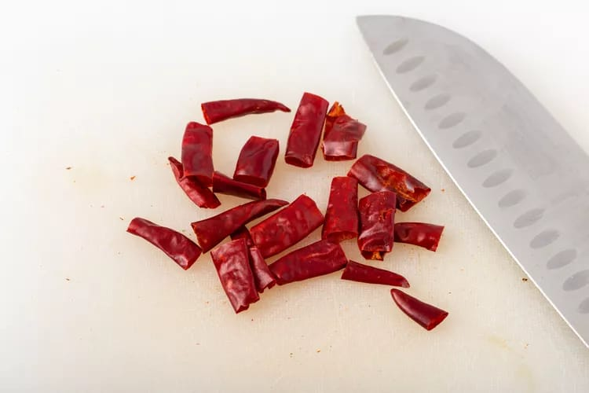

تسجيل الدخول
تسجيل الدخول
تسجيل الدخول
تسجيل الدخول
دجاج كونغ باو (المعروف أيضًا باسم Gong Bao أو Kung Pow) هو على الأرجح الطبق الأكثر ارتباطًا بالطعام الصيني في أمريكا. يعد هذا الطبق أيضًا أحد أكثر الأطباق أصالة في قوائم المطاعم الصينية ويعود بنكهته النارية إلى مكونين معينين: الفلفل الحار وفلفل سيشوان .إذا كنت تحب التوابل ، فهذا هو طبقك. يمكنك استخدام أي من الفلفل الأحمر المجفف والفلفل السيشوان اختياري ، على الرغم من أن الطبق يختلف بدونهما ولا يوجد بديل جيد. المكونات الرئيسية الأخرى في هذا الطبق هي زيت السمسم والثوم والزنجبيل والفول السوداني غير المملح.

| وقت التحضير | 15 دقيقه |
| وقت الطبخ | 10 دقيقه |
| الوقت الكلي | 25 دقيقه |
* ملاعق صغيرة صلصة الصويا2
* 1 1/2 ملعقة صغيرة شيري أو نبيذ الأرز شاوشينغ
* 1 ملعقة كبيرة ماء
* 2 ملاعق صغيرة نشا ذرة
* لتحضير الصلصة
* 3 ملاعق صغيرة من خل تشينكيانغ أو 2 ملاعق صغيرة من خل التفاح
* 2 ملاعق صغيرة صلصة الصويا
* 1 ملعقة صغيرة زيت سمسم
* 1 ملعقة كبيرة ماء
* 3 ملاعق صغيرة سكر
* 1 ملعقة صغيرة نشا ذرة
للدجاج:
* 2 صدور دجاج بدون عظم وجلد
* 8 فلفل أحمر حار مجفف (يفضل صنف Tien Tsin)
* 2 1/2 ملاعق كبيرة زيت السمسم
* 1 ملعقة صغيرة فلفل سيشوان كامل (اختياري)
* 1 ملعقة كبيرة زنجبيل مبشور طازج
* 3 فصوص ثوم مقطعة ناعماً
* 6 بصل أخضر مفروم
* 2/3 كوب فول سوداني محمص غير مملح
1.نقع الدجاج :
اخلطي مكونات التتبيلة معًا. نقطع الدجاج إلى قطع صغيرة الحجم ، ونقلبها في التتبيلة ، ونتركها جانبًا..

2. اخفقي مكونات الصلصة معًا:
تُمزج جميع مكونات الصلصة مع الخفق جيدًا لضمان دمج نشا الذرة تمامًا. اجلس جانبا
3.تحضير التوابل:
اكسر الفلفل الحار وتخلص من البذور الموجودة بداخله ، ثم قطّعها إلى بضع قطع كبيرة (سيكون الطبق ساخنًا جدًا بالفعل ، مما يجعل البذور بالقرب من الطعام غير صالحة للأكل).
.4.الفلفل الحار والفلفل الحار:
ضعي ملعقتين ونصف من زيت السمسم في img\logo أو img\logo كبيرة وضعيها على نار متوسطة عالية. يضاف الفلفل الحار وفلفل سيشوان إذا كنت تستخدم. تقلى لمدة بضع ثوان حتى تصبح عطرة مع الحرص على عدم حرقها.
5.نضيف الدجاج والعطريات:
أضف الدجاج. بمجرد انفصال القطع ، أضيفي الزنجبيل والثوم والبصل الأخضر. يُقلى المزيج لبضع دقائق حتى ينضج الدجاج تمامً.
6.قم بإنهاء القلي السريع:
أضيفي الصلصة وقلبي. عندما تصبح الصلصة سميكة ، أضيفي الفول السوداني وقلبي وقدميه .